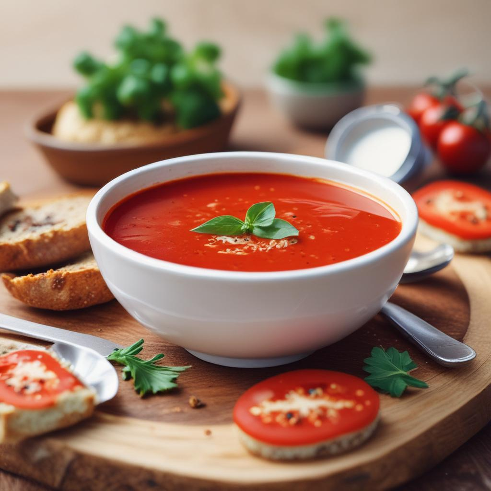

Tomato soup

Description
It's a very simple and tasty dish that you can make in approximately 1 hour. You can make it with ingredients you usually have at home; you will not need anything fancy.
Before you start, make sure you have a baking paper (more on that later), a blender or a hand blender, a meat of your choice, some potatoes, and cook them in advance (unless you want to eat a plain tomato soup).
Ingredients
- A bunch of tomatoes
- A clove of garlic
-
Dried or fresh herbs - pick one or a few
- Salt
- Sugar
- Black pepper
- Olive oil
- Potatoes & meat of your choice
Steps
- Before cooking the tomatoes, peal potatoes and boil them. Also, cut the meat of your choice and cook it according to your preference. I usually use chicken fillets with is recipe, which I boil in a salted water.
After that, make sure to cut the meat and potatoes so that it will be easier for you to eat them in a soup.
- Apply baking paper on a baking pan.
- Cut tomatoes in half, then place them on a baking sheet.
- Add salt to each tomato, then add a herb/s you prefer.
- Cut garlic and place it on each of your tomato.
- Add a little bit of sugar for caramelization.
- Cover the tomatoes with a little bit of olive oil.
- Bake at 230 degrees Celsius for 15 to 20, but make sure you do not burn the garlic and herbs.
- After baking, remove the burnt herbs, and, the most importantly, remove the skin from the baked tomatoes.
- Then move cleaned tomatoes and the juices that were left on a baking sheet into a cooking pot.
- Add some black pepper and salt to taste, then cook until it boils.
- Remove the pot pot the heat, and then pour the soup into a blender (or use a hand blender) to liquify it.
- Return it to the cooking pot, then add potatoes and meat to eat. Wait untill it bouils again
- You are done, and you are awesome!